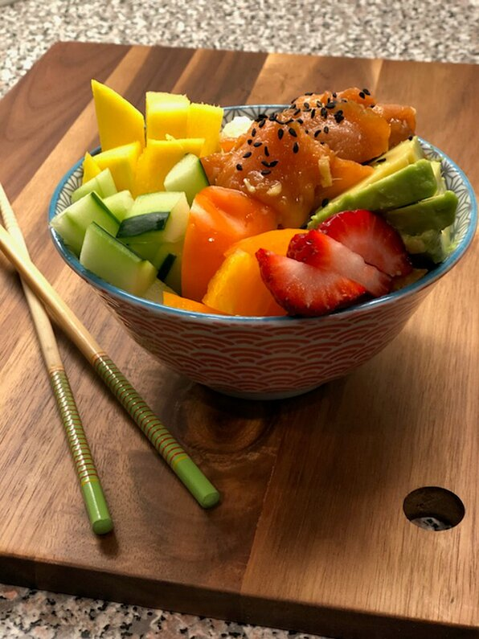

Smoked Salmon Poke Bowl
Keep it Fresh and Simple
Let the fresh ingredients shine through and be the star with this simple dish. Be creative and make it your own by adding your own flair and special ingredients.
Perfect for breakfast, lunch or dinner. This dish is a great way to use up all the random leftovers and ingredients in your fridge. Plus, everything tastes better when its in a bowl!
Ingredients:
- 1/4 cup Soya Sauce
- 3 Green Onions, thinly sliced
- 1 tbsp Black Sesame Oil
- 1 tbsp Rice Vinegar
- 1/2 tsp Garlic, minced
- 12 oz Smoked Salmon, chopped
- 2 cups Brown Rice, cooked
- 1/4 cup Mango, diced
- 1/4 cup Cucumer, diced
- 1/4 cup Avocado, diced
- 1/4 cup Strawberries, sliced
- 1 tsp Black Sesame Seeds
Instructions:
- Combine soy sauce, green onions, sesame oil, rice vinegar, ginger, and garlic in a bowl. Mix until thoroughly combined. Add salmon and marinate in the refrigerator for 30 minutes to 1 hour.
- Divide brown rice among 4 serving bowls. Top with salmon, mango, cucumber, avocado, and strawberries. Sprinkle black sesame seeds on top.